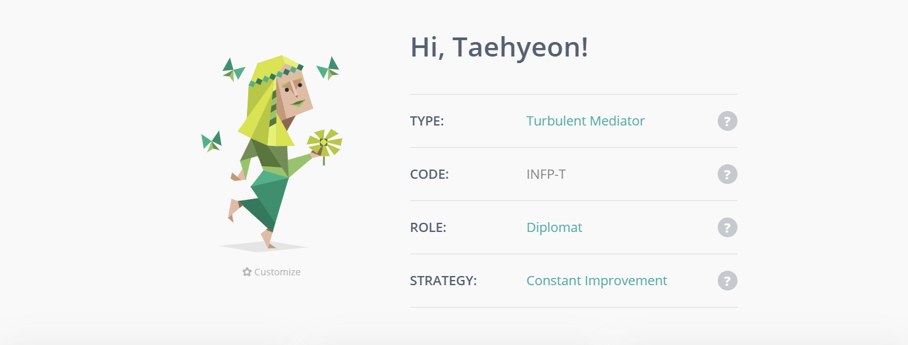

Team Name:
team name
Personal Information:
- - Trang:
- - Khanh:
- - Taehyeon:
called Ulsan. The city is famous for sunrise but if you want to travel in Korea, I don't want to recommend Ulsan for tourists. I am currently living as a pescatarian, so I eat everything but meat. And I can speak 3 languages which are Korean, English, and tiny bit of Vietnamese. I am learning Vietnamese. Welcome to initiate a conversation in these three languages! Running is my favorite activity. It always refreshes me when I am stuck in problems and worries. In my free time, I enjoy trekking and indoor climbing as well. I want to experience more in Vietnam if I have a chance. I am also inclined towards creative activities such as photography and music. I learned Korean traditional instruments and used to play the piano and guitar. I enjoy playing these as a hobby. I also used to take pictures so check out my photography album if you want! -> http://juta.creatorlink.net/
Today we live in an era of excessive information. Higher accessibility from handy devices as if smartphone and lab tap let people obtain various information. But the information gap still existed. Older people and people with disabilities are having trouble using digital devices. For example, self-service kiosks are often unclear and not friendly for older people and people with disabilities. Therefore, the majority of them need help from others or rather do not use it. Being unable to use digital technology might lead to an information gap and opportunity gap further economic gap. It affects not the only inconvenience in daily life but also worse the quality of life. I want to help them by developing programs to bridge the gap. To do that, I thought understanding and having knowledge is critical and should be first. As a result, my interest was headed to Information technology. Through this course, I want to take overall understanding in IT and hope it helps to choose the specific direction.
My biggest interest in IT is AI technology. Amongst the AI field, deep learning using big data technology is the most interesting part for me. Deep learning technology that computers train themselves without human effort to find and classify patterns in objects or pictures can be used in almost every field including bio, medical, finance, communication. Big enterprises such as Facebook, Twitter, and Google already offer real services by utilizing big data. And one day I want to develop a sign language translation program that recognizes and interprets sign language motion without the real person. Also want to develop a program and product that recognize the objects and let blind people hear by sound instead of their sight by using this technology.
The reason why I choose to come to RMIT is because I thought studying at RMIT is an opportunity to enhance my competitiveness. RMIT provides students a lot of experience associated with real IT fields so that students are offered practical assistance when they work in the future. Also, I think it is possible to expand my language because I can learn and use English and Vietnamese while studying in RMIT Vietnam. I think Learning new languages and living in an unfamiliar place allows us to think in a different way and it influences our view towards the world.
- - Thinh:
Team Profile:
- - Trang:
- - Khanh:
- - Taehyeon:
- MBTI

Mediator type of persons do not try to achieve many things at once and pay attention to only one goal. For me it is kind of true because when I do something, I can only concentrate on one task. I cannot simultaneously do many tasks at once. So, I will only focus on the group project after the team project is started. And as a person of mediator type, I am able to coordinate each other's positions well within the team when the arguments or conflict occurs.
- Learning Style

I learn better through visual and tactile learning than by auditory learning. The result saying that you may be easily distracted by sounds is really accurate. I cannot easily concentrate on my work in noisy places so that my favorite work/study place is library or quite cafe. However, since learning cannot be executed in just one style, I want to study with contrasting team members with different learning styles and experience and develop different styles of learning.
- Big Five Personality

The big 5 personality result showed that the highest score is in openness, I agree that I tend to be inquisitive and open to new things. This personality would help to conceive creative and adventurous ideas in the project. On the other hand, Conscientiousness was the lowest at 33%. I should put my effort into strengthening my self-discipline. I will try to make up the deficiencies in these five characteristics and hope I can help the team project.
- - Thinh:
Ideal Jobs:
- - Trang:
- - Khanh:
- - Taehyeon:
Information Technology Specialist

http://http://bitly.kr/LHwQ7QlfdOy
This job position appeals to me because the overall skills in IT as if network, security, application development, active directory are applied to the job. IT skills would be developed and expanded through the Information Technology specialist position. Also, the biopharmaceutical company, Celltrion Healthcare has high potential for development in this era. Therefore, self-development and advancement about IT are attainable. But looking at the responsibilities of this position, the task of this position is not only the overall skills in IT but also to develop strategies, analyze for efficient performance, and design solutions for business. It is an expert position for the person who already has considerable experience in the IT field rather than actual projects or applications developers. Therefore, critical abilities for the job are business analysis and establishing IT strategy, and communication such as negotiation, relationship and project management, presentation, and collaboration skills. Interpersonal skill to work with many architects and businesses is also indispensable.
Unfortunately, I am not adequate to apply for the IT specialist position right now. I do not have any practical experiences and career in IT field or any IT certifications. It is required at least 5 years IT experience and professional business skills. Thus, I should build my IT experience through work in practical business at first. I will establish the overall Information technology knowledge and experience in the real work industry applying for an internship during the university years, and I will take communication classes in business and management major on elective courses.
And the applicants who have certification as if ITIL (Information Technology Infrastructure Library), PMP (Project Management Professional), CISA (Certified Information System Auditor) are preferred for the job. ITIL stands for Information Technology Infrastructure Library and it is de-facto standards of IT service management. Firstly, I will apply for the ITIL Foundation certification test which does not require any qualification for examination during the school years. Qualification of examination of PMP and CISA for bachelor graduates, more than 3 years of PM (project management) and 5 years of IS (Information System) hands on experience, respectively. In addition, 35 hours of PM education and passing the CISA exam are prerequisites to get the certifications. Therefore, I will learn more about the certification detail and get it after hands on work experience.
Celltrion is a multinational company. Most businesses are conducted overseas including the U.S., Europe. 30% of employees are international and most communication is conducted in English, speaking and writing for business is critical. I felt my English was inadequate for the job. I will use my time to intensify the English studies to improve business English skills progressively with getting certifications
- - Thinh:
- - :
- - :
- - Machine Learning:
- - :
Tools
Industry Data
IT Work
Unfortunately, a face-to-face interview was not available because the IT professional we interviewed is living in HaNoi right now. Hence, we conducted the interview via skype. Below are the interview contents.